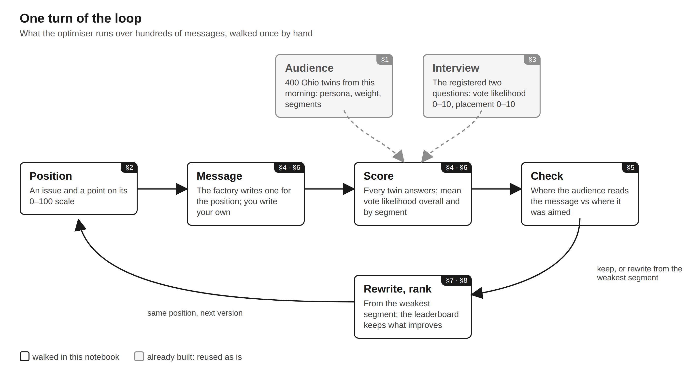
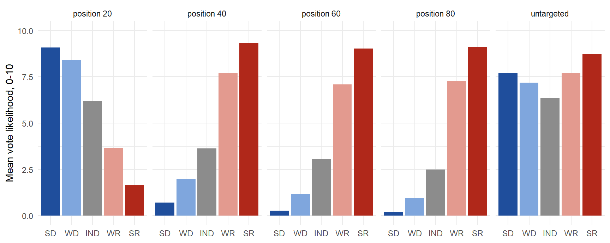
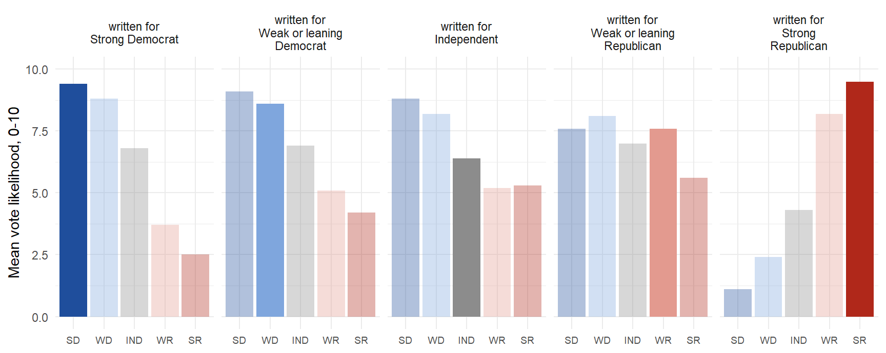
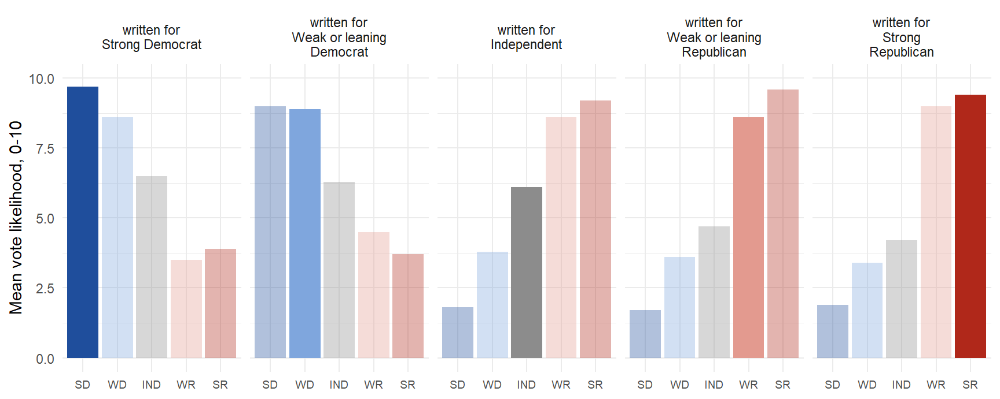
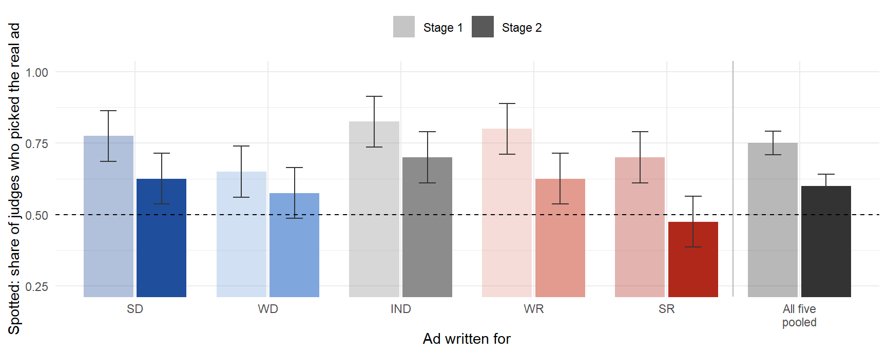

Notebook 2 — A silicon audience: writing ads for five kinds of voter
LLMSS 2026, Workshop 3 (The Silicon Audience), Silicon Voters block · Hong Kong, 13 October 2026
What you will do
A silicon audience is a panel of digital twins: a language model, given one voter’s record, predicts how that voter would answer a question about a political message. The Talking to Machines group uses such panels to decide which message reaches which voter before the message runs, and it is testing the panels against the people they are built from in a pre-registered study (OSF, 7 October 2026).
In this notebook a language model writes a thirty-second television ad, and you improve the instructions it is given, in three stages. Every ad is aimed at one of five kinds of Ohio voter, from strong Democrats to strong Republicans, and every ad gets two scores:
- Does it read like a real ad? Judges compare it with a real Ohio campaign ad and try to spot the machine-written one.
- Does it hit its group? The twins say how likely they would be to vote for the candidate behind it, and the ad should do better with its own group than with the other four.
The sections, in about forty-five minutes:
- The Voters: the 400 Ohio twins you built this morning, in five groups;
- The question: your issue, and the one question every twin answers;
- The study’s scripts: how the five groups rated the scripts in the pre-registered study, and how to read a score that is about aim;
- Stage 1: a basic prompt writes five ads, one per group;
- Stage 2: the same prompt with what our tests taught us added;
- Stage 3: your prompt, run live: push the aim higher than Stage 2;
- The leaderboard, and what the loop does next;
- What a twin cannot know.
Stages 1 and 2, and one worked example of Stage 3, were run once by the organisers and ship with the notebook, so the same prompt gives everyone the same ads and the same scores. Only Stage 3 calls a language model, and only if an API key is set. Everything else runs offline from the files beside this notebook.
How to read this notebook. As in the morning’s notebooks, every table, text block and figure the code prints has a number, given in bold just above the code that prints it, and the text says which table, row or column a number comes from.
Figure 0.1. The loop. The optimiser runs the ring over hundreds of messages; this notebook walks it by hand, three times, with the audience and the question already built.
The first block loads the packages the notebook uses and sets the folders it reads from and writes to.
library(data.table)
library(jsonlite)
library(ggplot2)
DATA <- file.path("..", "data")
OUT <- file.path("..", "output")
dir.create(OUT, showWarnings = FALSE)
read_parquet <- function(f) { # arrow on the workshop server; nanoparquet is a light fallback
if (requireNamespace("arrow", quietly = TRUE)) as.data.table(arrow::read_parquet(f))
else as.data.table(nanoparquet::read_parquet(f))
}
GROUPS <- data.table(
group = c("SD", "WD", "IND", "WR", "SR"),
label = c("Strong Democrat", "Weak or leaning Democrat", "Independent",
"Weak or leaning Republican", "Strong Republican"),
phrase = c("strong Democrats", "weak or leaning Democrats", "independents",
"weak or leaning Republicans", "strong Republicans"))
GROUP_COLOURS <- c(SD = "#1f4e9c", WD = "#7fa6dd", IND = "#8c8c8c", WR = "#e39a8f", SR = "#b0281a")1. The Voters
The audience is the 400-twin Ohio panel from Workshop 1: a seeded draw from the census frame, each twin matched to a Cooperative Election Study respondent and rendered as a persona. The panel ships with this notebook as a copy, so you do not need the morning’s output/ folder, but it is the same 400 twins with the same personas, character for character.
Every persona carries the matched respondent’s own party identification on the seven-point scale. The block below reads it from the persona and puts each twin in one of five groups: strong Democrats; weak or leaning Democrats; independents; weak or leaning Republicans; strong Republicans. A twin whose respondent answered “not sure” is in none of the five and is left out of the group tables.
Table 1.1. panel: the 400 twins, by party identification and the group it puts them in.
panel <- read_parquet(file.path(DATA, "oh_panel_400.parquet"))
panel[, pid7 := sub("^- Party identification: ", "",
regmatches(persona_text, regexpr("- Party identification: [^\n]+", persona_text)))]
PID_TO_GROUP <- c("Strong Democrat" = "SD", "Not Very Strong Democrat" = "WD", "Lean Democrat" = "WD",
"Independent" = "IND",
"Lean Republican" = "WR", "Not Very Strong Republican" = "WR", "Strong Republican" = "SR")
panel[, group := unname(PID_TO_GROUP[pid7])]
panel[, .N, by = .(pid7, group)][order(match(group, GROUPS$group))]| pid7 | group | N |
|---|---|---|
| Strong Democrat | SD | 90 |
| Lean Democrat | WD | 37 |
| Not Very Strong Democrat | WD | 31 |
| Independent | IND | 38 |
| Lean Republican | WR | 49 |
| Not Very Strong Republican | WR | 45 |
| Strong Republican | SR | 94 |
| Not Sure | NA | 16 |
The next block prints one persona in full: this is everything the twin is told about who it is, exactly as the morning’s model read it. Change TWIN to read another. Notice the provenance line at the head of each section — modelled from the census cell, or the matched respondent’s own answer — and notice what is not there: no advertisement, no rating of one, nothing about this study.
Text 1.1. The persona of twin TWIN.
TWIN <- panel$twin_id[1]
cat(panel[twin_id == TWIN, persona_text])=== PROFILE ===
The following is a record describing an adult citizen in the state of Ohio. It describes who you are: your
civic record, your circumstances, your values and your political opinions. Each section states where the
information comes from.
-- CIVIC RECORD (not observed: synthetic skeleton drawn from the census frame, no voter-file record) --
- Congressional district: OH-01
- Voted in the November 2024 general election: yes (modelled from the census frame)
- Earlier general elections, primary participation, registration: (not observed)
-- DEMOGRAPHICS (census frame cell; modelled fields marked, respondent's own answers marked) --
- Age: 35
- Sex: Female (census frame cell; modelled)
- Ethnicity: Middle Eastern (the matched survey respondent's own answer)
- Education: Postgraduate degree (the matched survey respondent's own answer)
- Household income: Prefer not to say (the matched survey respondent's own answer, CES 2025)
- Marital status: Married (the matched survey respondent's own answer)
-- VALUES & POLITICS (donated from CES 2025 respondent #2524025786) --
- Party identification: Lean Democrat
- Party identification including leaners: Democrat (Including Leaners)
- Ideology: Liberal
- Retrospective economic evaluation (as of 2025): Gotten much worse
- Presidential approval (as of 2025): Strongly Disapprove
- Issue positions (the donor's own answers, CES 2025):
- Ukraine (as of 2025): Impose economic sanctions on Russia; Send food, medicine, and other humanitarian aid to Ukraine
- Israel/Gaza (as of 2025): Send food, medicine and other aid to the communities affected
- Gun control - Ban assault rifles: Support
- Gun control - Make it easier for people to obtain concealed-carry permit: Oppose
- Gun control - Require criminal background checks on all gun sales: Support
- Gun control - Increase the number of police on the street by 10 percent, even if it means fewer funds for other public services: Oppose
- Gun control - Decrease the number of police on the street by 10 percent, and increase funding for other public services: Support
- Grant legal status to all illegal immigrants who have held jobs and paid taxes for at least 3 years, and not been convicted of any felony crimes: Support
- Increase the number of border patrols on the US-Mexican border: Oppose
- Build a wall between the U.S. and Mexico: Oppose
- Provide permanent resident status to children of immigrants who were brought to the United States by their parents (also known as Dreamers). Provide these immigrants a pathway to citizenship if they meet the citizenship requirements and have committed no crimes: Support
- Give the Environmental Protection Agency power to regulate carbon dioxide emissions: Support
- Require that at least 20 percent of electricity be generated with renewable sources such as wind, solar, or hydroelectric power: Support
- Strengthen the Environmental Protection Agency enforcement of the Clean Air Act and Clean Water Act even if it costs U.S. jobs: Support
- Increase fossil fuel production in the U.S: Oppose
- Halt new oil and gas leases on federal lands: Support
- Relax local zoning laws in your state to allow for construction of more apartments and condos: Oppose
- Expand federal tax incentives to encourage developers to build homes for people who make less than half of the average income in your area: Support
- Require able-bodied adults under 64 years of age who do not have dependents to have a job in order to receive Medicaid: Support
- Repeal the Affordable Care Act: Oppose
-- CIRCUMSTANCES & BELIEFS (donated from CES 2025 respondent #2524025786; the respondent's own answers) --
- Employment status: Part-time
- Home: Own
- Children under 18 in the household: Yes
- Number of children: not asked in this respondent's survey (CES 2025)
- Parent or guardian of: a child under 18
- Household income change over the past year (as of 2025): Stayed about the same
- Prices of everyday goods over the past year (as of 2025): Increased a lot
- If faced with an unexpected $400 expense: not asked in this respondent's survey (CES 2025)
- Labour union member: I formerly was a member of a labor union
- Union member elsewhere in the household: A member of my household was formerly a member of a labor union, but is not now
- Covered by a union contract: No
- Religion: Something else
- Born-again or evangelical Christian: No
- Importance of religion: Not at all important
- Attends religious services: Never
- Prays: Never
- Views on race and gender: not asked in this respondent's survey (CES 2025)
-- MEDIA DIET (donated from CES 2025 respondent #2524025786) --
- Interest in news and public affairs: Only now and then
- Media market (DMA): (absent)
- Media use in the past 24 hours (the donor's own answers, as of 2025):
- Used: TV news, a newspaper (print or online)
- Did not use: social media, radio news
- Type of TV news watched: national news
- TV networks watched: ABC
- Type of newspaper read: online
- Political activity on social media: not applicable (did not use social media)
=== END OF PROFILE ===2. The question
Pick one of the two issues in Table 2.1 and put it in ISSUE. Every ad you see from here on is about that issue.
Table 2.1. issues: the two issues in this block.
issues <- fread(file.path(DATA, "issues.csv"))[key %in% c("COST", "IMM")]
ISSUE <- "immigration" # or "taxes and household relief"
it <- issues[issue == ISSUE]
issues[, .(key, issue, title)]| key | issue | title |
|---|---|---|
| COST | taxes and household relief | Taxes and household relief |
| IMM | immigration | Immigration |
Every ad is put to every twin with one question: how likely this person would be to vote for the candidate behind the ad, from 0 (certainly not) to 10 (certainly would). It is the vote-likelihood item of the pre-registered study, word for word.
The header tells the model what it is doing: predicting the answer a particular person would give, in the third person (“this person”), from that person’s record. That is how the registered study puts it, and it is not the same as asking the model to be the person. The profile is the persona you read in Text 1.1; then comes the ad, and the question. The twin is never told which group an ad was written for, who wrote it, or what the study is about.
The block below defines the header, the question and the JSON schema the answer must match, and prints them.
Text 2.1. The question, as sent (the profile omitted).
HEADER <- paste(
"Below is the profile of an adult in Ohio, and then a political advertisement. Predict how this",
"person would answer the question that follows: give the answer this person would actually give,",
"not the answer a typical person would give, and not the one you would wish them to give.",
"Return only the JSON object described at the end.")
question_block <- function(script) paste0(
"Here is the script for a thirty-second television advertisement by a candidate running for office.\n\n",
script, "\n\n",
"After reading this, how likely would this person be to vote for the candidate behind this advertisement?\n",
"0 = certainly not, 10 = certainly would.\n",
"Return: {\"ptv\": <0-10>}")
SCHEMA <- list(type = "object", additionalProperties = FALSE, required = list("ptv"),
properties = list(ptv = list(type = "integer", minimum = 0, maximum = 10)))
cat(HEADER, "\n\n=== PROFILE ===\n{persona_text}\n=== END OF PROFILE ===\n\n", sep = "")Below is the profile of an adult in Ohio, and then a political advertisement. Predict how this person would answer the question that follows: give the answer this person would actually give, not the answer a typical person would give, and not the one you would wish them to give. Return only the JSON object described at the end.
=== PROFILE ===
{persona_text}
=== END OF PROFILE ===cat(question_block("{script}"))Here is the script for a thirty-second television advertisement by a candidate running for office.
{script}
After reading this, how likely would this person be to vote for the candidate behind this advertisement?
0 = certainly not, 10 = certainly would.
Return: {"ptv": <0-10>}3. The study’s scripts, by group
Before writing anything, look at what the group’s own message factory wrote. The pre-registered study fields fifteen scripts: for each of three issues, four written for positions 20, 40, 60 and 80 on a left–right scale for that issue, and one untargeted script on a different matter altogether, the control. They were frozen with the registration, and all fifteen have already been put to all 400 twins.
One caution about these answers. They were generated before the registration was finalised, with an earlier interview that asked the model to answer as the person, and with four questions rather than one. Only the vote-likelihood answer is used here.
The block below defines the scoring used in the rest of the notebook, and prints nothing:
group_means()gives each ad’s mean vote likelihood (0–10) in each of the five groups;aim()gives each ad’s aim: the mean in the group it was written for, minus the average of the means in the other four groups.
read_jsonl <- function(f) {
if (!file.exists(f) || length(readLines(f, warn = FALSE)) == 0) return(data.table())
rbindlist(lapply(readLines(f, warn = FALSE), function(l) as.data.table(fromJSON(l))), fill = TRUE)
}
group_means <- function(ans) {
d <- merge(ans, panel[!is.na(group), .(twin_id, group)], by = "twin_id")
d[, .(n = .N, ptv = round(mean(ptv), 2)), by = .(ad_id, group)]
}
aim <- function(gm, targets) { # targets: ad_id, target (a group)
d <- merge(gm, targets[, .(ad_id, target)], by = "ad_id")
d[, .(target_ptv = ptv[group == target[1]],
others_ptv = round(mean(ptv[group != target[1]]), 2)), by = .(ad_id, target)][
, aim := round(target_ptv - others_ptv, 2)][]
}The next block reads the cached answers and prints the five group means for the five scripts on your issue, one row per script.
Table 3.1. study: mean vote likelihood by group, for the study’s scripts on your issue.
study_ads <- fread(file.path(DATA, "ads_frozen.csv"))[issue == ISSUE]
study_ads[, script := ifelse(arm == "targeted", paste("position", target_position), "untargeted")]
cached <- read_jsonl(file.path(DATA, "ad_answers.jsonl"))[ad_id %in% study_ads$ad_id, .(twin_id, ad_id, ptv = as.numeric(ptv))]
study <- merge(group_means(cached), study_ads[, .(ad_id, script)], by = "ad_id")
dcast(study, ad_id + script ~ factor(group, levels = GROUPS$group), value.var = "ptv")| ad_id | script | SD | WD | IND | WR | SR |
|---|---|---|---|---|---|---|
| IMM_20 | position 20 | 9.09 | 8.41 | 6.18 | 3.67 | 1.65 |
| IMM_40 | position 40 | 0.71 | 1.99 | 3.63 | 7.71 | 9.32 |
| IMM_60 | position 60 | 0.28 | 1.19 | 3.05 | 7.09 | 9.03 |
| IMM_80 | position 80 | 0.21 | 0.96 | 2.50 | 7.28 | 9.11 |
| IMM_U | untargeted | 7.70 | 7.18 | 6.37 | 7.71 | 8.72 |
Figure 3.1. The same, as five bars per script: one bar per group, strong Democrats on the left, strong Republicans on the right.
ggplot(study, aes(x = factor(group, levels = GROUPS$group), y = ptv, fill = group)) +
geom_col() + facet_wrap(~ script, nrow = 1) +
scale_fill_manual(NULL, values = GROUP_COLOURS, guide = "none") +
scale_x_discrete(NULL) + scale_y_continuous("Mean vote likelihood, 0-10", limits = c(0, 10)) +
theme_minimal()
Exercise 3.1. Suppose you had to pick one of these five scripts to win over weak or leaning Republicans (WR). Which script has the highest mean with that group in Table 3.1? Now compute each script’s aim for that group with aim(study, study_ads[, .(ad_id, target = "WR")]). Is the script with the highest bar also the script with the best aim? Why might they differ?
4. Stage 1: the basic prompt
From here on a language model writes the ads. The factory is a single call to the workshop model with a prompt printed in full below: one prompt, one call, no hidden machinery. {issue} and {group} are filled in for each ad, so one prompt writes five ads, one per group.
The block below reads your key and the proxy address from the environment, defines the prompts and the model calls, and prints the Stage 1 prompt.
fill()puts the issue and the group into a prompt;write_ads()sends a filled prompt for each group and returns the five ads. The workshop model sometimes declines to write a political ad aimed at a named group of voters (“Sorry, I can’t create targeted political persuasion…”); when it does,write_ads()asks again, up to three times, and columnaskedrecords how many tries each ad took. An ad still declined after three tries is markeddeclinedand is not scored;run_ads()puts each ad to the audience and to the judges (below).
Text 4.1. The Stage 1 prompt.
MODEL <- "gpt-5-mini-2025-08-07"
key <- Sys.getenv("OPENAI_API_KEY")
base <- Sys.getenv("OPENAI_BASE_URL", unset = "https://api.openai.com/v1")
API <- paste0(sub("/+$", "", base), "/chat/completions")
STAGE1 <- paste(
"Write the script for a thirty-second television advertisement by a candidate running for office in Ohio.",
"75 to 85 words, spoken by the candidate in the first person, ending with \"And I approve this message.\"",
"Name no candidate, party or office. The advertisement is about {issue}. It should win the vote of {group} in Ohio.")
STAGE2_ADD <- paste(
"Write it the way a real candidate speaks. Say once, flatly, what you did before politics that gives you the right",
"to talk about this: a job, a service, a business. Put in one concrete scene or detail, a person, a street, a price,",
"invented but with nobody named. Promise what you will do in plain verbs, naming the instrument, never \"fix\" or",
"\"stand up to\". Short spoken sentences, contractions, no hedging, no balancing the other side, no neat parallel",
"closing line.")
EXAMPLE_ADD <- "Mention one thing the voter can check for themselves." # the worked example of Stage 3 (Section 6)
fill <- function(prompt, group) paste0(
gsub("{group}", GROUPS$phrase[match(group, GROUPS$group)], gsub("{issue}", it$issue, prompt, fixed = TRUE), fixed = TRUE),
"\n\nReturn the script only.")
chat <- function(messages, response_format = NULL) {
body <- list(model = MODEL, reasoning_effort = "low", messages = messages)
if (!is.null(response_format)) body$response_format <- response_format
httr2::request(API) |> httr2::req_auth_bearer_token(key) |> httr2::req_body_json(body) |>
httr2::req_retry(max_tries = 3) |> httr2::req_timeout(120)
}
perform_all <- function(reqs, workers = 8) {
if (packageVersion("httr2") >= "1.1.0") httr2::req_perform_parallel(reqs, on_error = "continue", max_active = workers, progress = FALSE)
else httr2::req_perform_parallel(reqs, pool = curl::new_pool(total_con = workers, host_con = workers), on_error = "continue", progress = FALSE)
}
content_of <- function(r) if (inherits(r, "error") || is.null(r)) NA_character_ else
trimws(httr2::resp_body_json(r)$choices[[1]]$message$content)
n_words <- function(x) lengths(strsplit(x, "\\s+"))
is_ad <- function(x) !is.na(x) & grepl("approve this message", x, ignore.case = TRUE) &
!grepl("^\\W*(sorry|i'm sorry|i am sorry|i can.?t|i cannot)", x, ignore.case = TRUE)
write_ads <- function(prompt, id_prefix, tries = 3) { # asks again, up to `tries` times, for any ad the model declined
text <- rep(NA_character_, nrow(GROUPS)); asked <- integer(nrow(GROUPS))
for (t in seq_len(tries)) {
todo <- which(!is_ad(text))
if (!length(todo)) break
reqs <- lapply(GROUPS$group[todo], function(g) chat(list(list(role = "user", content = fill(prompt, g)))))
text[todo] <- vapply(perform_all(reqs), content_of, character(1)); asked[todo] <- t
}
data.table(ad_id = paste0(id_prefix, "_", GROUPS$group), issue = it$key, target = GROUPS$group,
prompt = prompt, text = text, asked = asked, declined = !is_ad(text))[, words := n_words(text)][]
}
cat(strwrap(STAGE1, width = 90), sep = "\n")Write the script for a thirty-second television advertisement by a candidate running for
office in Ohio. 75 to 85 words, spoken by the candidate in the first person, ending with
"And I approve this message." Name no candidate, party or office. The advertisement is
about {issue}. It should win the vote of {group} in Ohio.The audience and the judges
Four hundred twins is more than a live round needs. The next block draws the audience for every ad in Stages 1 to 3: ten twins from each group, fifty in all, with a fixed seed so that everyone in the room scores on the same fifty.
It also loads the real ads: ten thirty-second campaign spots, nine from Ohio and one from Illinois, taken from Google’s political-ad archive with the candidates’ names removed (five Republican, five Democratic). They are what the judges compare each machine-written ad with. Each ad is shown to forty judges, separate calls to the same model, each with one real ad, and each judge is asked which of the two is the real one. Every machine-written ad meets each of the ten real ads four times: twice with the real ad shown first (text A) and twice with it shown second (text B). The order matters because the judges lean towards text A, and showing each pairing both ways means that lean weighs the same on every ad. An ad’s spotted score is the share of its judges who picked the real ad correctly: 0.5 is what guessing gives, so an ad near 0.5 or below reads like a real one, and 1 means every judge saw through it. An ad passes if at least one judge was fooled.
The block prints the judge’s instruction, and one real ad so you can hear what the judges hear.
Text 4.2. The judge’s instruction, and one of the real ads.
set.seed(2026)
audience <- panel[!is.na(group), .SD[sample(.N, 10)], by = group]
real_ads <- read_jsonl(file.path(DATA, "real_ads_judges.jsonl"))
N_JUDGES <- 40
JUDGE <- paste(
"You are shown two texts. Each is the spoken words of a thirty-second American political advertisement.",
"One of them is a real advertisement that a candidate's campaign put on the air. The other was written",
"by a machine imitating one. Names have been removed from both.\nSay which one is the real advertisement.\n",
"Return only: {\"real\": \"A\" or \"B\", \"confidence\": <50-100>}")
JUDGE_SCHEMA <- list(type = "object", additionalProperties = FALSE, required = c("real", "confidence"),
properties = list(real = list(type = "string", enum = list("A", "B")),
confidence = list(type = "integer", minimum = 50, maximum = 100)))
twin_request <- function(persona_text, script) chat(
list(list(role = "system", content = HEADER),
list(role = "user", content = paste0("=== PROFILE ===\n", persona_text, "\n=== END OF PROFILE ===\n\n", question_block(script)))),
response_format = list(type = "json_schema", json_schema = list(name = "ptv", strict = TRUE, schema = SCHEMA)))
judge_pairs <- function(id) { # every real ad in both slots, A and B; the same draw for the same ad, every run
set.seed(sum(utf8ToInt(id) * seq_along(utf8ToInt(id))))
grid <- CJ(ref_id = real_ads$ref_id, real_pos = c("A", "B"))
grid <- grid[rep(seq_len(.N), ceiling(N_JUDGES / .N))][sample(.N)][seq_len(N_JUDGES)]
data.table(ad_id = id, judge = seq_len(N_JUDGES), grid)
}
judge_request <- function(machine, real, real_pos) chat(
list(list(role = "user", content = paste0(JUDGE, "\n\nText A:\n", if (real_pos == "A") real else machine,
"\n\nText B:\n", if (real_pos == "A") machine else real))),
response_format = list(type = "json_schema", json_schema = list(name = "judge", strict = TRUE, schema = JUDGE_SCHEMA)))
run_ads <- function(ads) { # ads: ad_id, text. 50 twins + 40 judges per ad, all in parallel
tw <- CJ(ad = seq_len(nrow(ads)), k = seq_len(nrow(audience)))
jp <- rbindlist(lapply(ads$ad_id, judge_pairs))
reqs <- c(lapply(seq_len(nrow(tw)), function(r) twin_request(audience$persona_text[tw$k[r]], ads$text[tw$ad[r]])),
lapply(seq_len(nrow(jp)), function(r) judge_request(ads[ad_id == jp$ad_id[r], text],
real_ads[ref_id == jp$ref_id[r], text], jp$real_pos[r])))
resps <- perform_all(reqs)
failed <- vapply(resps, function(r) inherits(r, "error") || is.null(r), logical(1))
first_error <- if (any(failed)) conditionMessage(resps[[which(failed)[1]]]) else NA_character_
out <- vapply(resps, content_of, character(1))
t_out <- out[seq_len(nrow(tw))]; j_out <- out[nrow(tw) + seq_len(nrow(jp))]
answers <- tw[, .(ad_id = ads$ad_id[ad], twin_id = audience$twin_id[k], persona_sha256 = audience$persona_sha256[k],
ptv = vapply(t_out, function(x) if (is.na(x)) NA_real_ else as.numeric(fromJSON(x)$ptv), numeric(1)),
model = MODEL)][!is.na(ptv)]
jp[, `:=`(pick = vapply(j_out, function(x) if (is.na(x)) NA_character_ else fromJSON(x)$real, character(1)),
confidence = vapply(j_out, function(x) if (is.na(x)) NA_real_ else as.numeric(fromJSON(x)$confidence), numeric(1)),
model = MODEL)]
jp[, spotted := pick == real_pos]
list(answers = answers, judges = jp[!is.na(pick)], failed = sum(failed), first_error = first_error)
}
scoreboard <- function(ads, answers, judges) {
a <- aim(group_means(answers), ads)
s <- judges[, .(judges = .N, spotted = round(mean(spotted), 2)), by = ad_id]
d <- merge(merge(ads[, .(ad_id, target)], a[, .(ad_id, target_ptv, others_ptv, aim)], by = "ad_id"), s, by = "ad_id")
d[, passes := spotted < 1][order(match(target, GROUPS$group))]
}
five_bars <- function(ads, answers) {
gm <- merge(group_means(answers), ads[, .(ad_id, target)], by = "ad_id")
gm[, panel := paste("written for", GROUPS$label[match(target, GROUPS$group)])]
gm[, panel := factor(panel, levels = paste("written for", GROUPS$label))]
ggplot(gm, aes(x = factor(group, levels = GROUPS$group), y = ptv, fill = group, alpha = group == target)) +
geom_col() + facet_wrap(~ panel, nrow = 1, labeller = label_wrap_gen(16)) +
scale_fill_manual(NULL, values = GROUP_COLOURS, guide = "none") +
scale_alpha_manual(values = c(`TRUE` = 1, `FALSE` = 0.35), guide = "none") +
scale_x_discrete(NULL) + scale_y_continuous("Mean vote likelihood, 0-10", limits = c(0, 10)) +
theme_minimal() + theme(axis.text.x = element_text(size = 7))
}
spotted_adjusted <- function(sbs, judges) { # each ad and each prompt pooled, with real ad x slot fixed effects
key <- rbindlist(lapply(names(sbs), function(n) sbs[[n]][, .(ad_id, prompt = n, target)]))
j <- merge(judges[, .(ad_id, ref_id, real_pos, spotted = as.numeric(spotted))], key, by = "ad_id")
j[, cell := interaction(ref_id, real_pos)]
est <- function(unit) { # unit means at the average real ad and slot, and their 95% intervals
s <- coef(summary(lm(as.formula(paste("spotted ~ 0 +", unit, "+ cell")), data = j, contrasts = list(cell = "contr.sum"))))
s <- s[startsWith(rownames(s), unit), , drop = FALSE]
data.table(id = sub(paste0("^", unit), "", rownames(s)), spotted = s[, 1], lo = s[, 1] - 1.96 * s[, 2], hi = s[, 1] + 1.96 * s[, 2])
}
rbind(merge(key, est("ad_id"), by.x = "ad_id", by.y = "id")[, .(prompt, target, spotted, lo, hi)],
est("prompt")[, .(prompt = id, target = "ALL", spotted, lo, hi)])
}
spotted_bars <- function(sbs, judges) { # sbs: named list of scoreboards, one per prompt, drawn left to right
d <- spotted_adjusted(sbs, judges)
d[, prompt := factor(prompt, levels = names(sbs))]
dodge <- position_dodge(width = 0.8)
ggplot(d, aes(x = factor(target, levels = c(GROUPS$group, "ALL")), y = spotted, fill = target, alpha = prompt, group = prompt)) +
geom_col(position = dodge, width = 0.75) +
geom_errorbar(aes(ymin = lo, ymax = hi), position = dodge, width = 0.25, alpha = 1, colour = "grey20") +
geom_hline(yintercept = 0.5, linetype = "dashed") +
geom_vline(xintercept = 5.5, colour = "grey70") +
scale_fill_manual(NULL, values = c(GROUP_COLOURS, ALL = "#333333"), guide = "none") +
scale_alpha_manual(NULL, values = seq(0.35, 1, length.out = length(sbs))) +
scale_x_discrete("Ad written for", labels = c(GROUPS$group, "All five\npooled")) +
scale_y_continuous("Spotted: share of judges who picked the real ad", breaks = seq(0.25, 1, 0.25)) +
coord_cartesian(ylim = c(0.25, 1)) +
theme_minimal() + theme(legend.position = "top")
}
cat(JUDGE, "\n\n")You are shown two texts. Each is the spoken words of a thirty-second American political advertisement. One of them is a real advertisement that a candidate's campaign put on the air. The other was written by a machine imitating one. Names have been removed from both.
Say which one is the real advertisement.
Return only: {"real": "A" or "B", "confidence": <50-100>} cat(real_ads$ref_id[1], " (", real_ads$party[1], ", ", real_ads$state[1], ", ", real_ads$words[1], " words)\n\n", sep = "")OH_REAL_01 (R, OH, 85 words)cat(strwrap(real_ads$text[1], width = 90), sep = "\n")We moved to the farm when I was 10, and that's when I got my first job baling hay, fixing
fences, and taking care of livestock. I know that things are tough right now for working
families. So, in Congress, I sponsored the law that eliminates taxes on tips and
overtime. I've cut taxes for seniors on Social Security. And just like the jobs on the
farm, we've done a lot, but together there's a lot more we can do. And I approve this
message.What Stage 1 wrote
The next block reads the Stage 1 ads for your issue from the stored run and prints them, one per group.
Text 4.3. The five Stage 1 ads.
STAGE_ADS <- fread(file.path(DATA, "stage_ads.csv"))
STAGE_ANSWERS <- read_jsonl(file.path(DATA, "stage_answers.jsonl"))
STAGE_JUDGES <- read_jsonl(file.path(DATA, "stage_judges.jsonl"))
show_ads <- function(ads) for (i in seq_len(nrow(ads))) {
cat(sprintf("%s — written for %s (%d words)\n", ads$ad_id[i], GROUPS$phrase[match(ads$target[i], GROUPS$group)], ads$words[i]))
cat(strwrap(ads$text[i], width = 90, prefix = " "), sep = "\n"); cat("\n")
}
s1 <- STAGE_ADS[stage == 1 & issue == it$key]
show_ads(s1)S1_IMM_SD — written for strong Democrats (78 words)
I believe our immigration system must reflect our values: compassion, labor rights,
and family unity. I’ll expand a fair pathway to citizenship for Dreamers and longtime
contributors, protect asylum seekers, and invest in humane processing at the border.
I’ll defend workers’ rights so newcomers and Ohioans earn fair wages, and reform visa
programs for farmers and manufacturers. Together we can fix a broken system with
dignity and common-sense enforcement that keeps communities safe. And I approve this
message.
S1_IMM_WD — written for weak or leaning Democrats (79 words)
I came from a family that believes in working hard and treating neighbors with
dignity. I support secure borders and clear rules, but I also believe we must protect
Dreamers, keep families together, and create a fair path to citizenship for people who
contribute to our communities and economy. Investing in legal immigration lifts wages
and strengthens unions, schools, and small businesses across Ohio. I’ll fight for
humane, practical solutions that reflect our values. And I approve this message.
S1_IMM_IND — written for independents (84 words)
I grew up in Ohio, and I believe we can secure our borders while treating people with
dignity. I will support practical, common-sense policies that protect communities,
enforce the law, and grow our economy by legalizing workers we need and fixing our
broken system. I will work across parties to deliver sensible solutions that keep
families safe and honor our values. Together we can make immigration fair, secure, and
focused on opportunity for all who play by the rules. And I approve this message.
S1_IMM_WR — written for weak or leaning Republicans (80 words)
I believe our immigration system should be fair, secure, and humane. I will work to
protect our borders, support legal pathways for families seeking opportunity, and
invest in smart, practical enforcement that keeps Ohio safe. We can fix broken rules
so employers, communities, and newcomers can thrive together. I will put honest
solutions ahead of fear, cut through the chaos, and get results that respect the law
and our values. I'm committed to real leadership. And I approve this message.
S1_IMM_SR — written for strong Republicans (78 words)
I believe in secure borders, strict enforcement of immigration laws, and an
immigration system that serves American workers first. I will stop illegal entry, end
sanctuary policies, and strengthen E-Verify so jobs go to citizens and legal
residents. I support expedited deportation for criminal aliens and a merit-based legal
immigration system that protects our communities and honors those who follow the
rules. I will put safety and opportunity for Ohio families above politics. And I
approve this message.Figure 4.1. How the five groups rated each Stage 1 ad. Each panel is one ad; the bar of the group it was written for is solid, the other four are pale. A well-aimed ad has its solid bar standing above the pale ones; an ad whose solid bar is merely high, with the pale bars just as high, pleases everyone and aims at no one.
five_bars(s1, STAGE_ANSWERS)
Table 4.1. Stage 1 scores: aim (the target group’s mean, target_ptv, minus the average of the other four, others_ptv), spotted (the share of the forty judges who picked the real ad) and passes (at least one judge fooled).
sb1 <- scoreboard(s1, STAGE_ANSWERS, STAGE_JUDGES)
sb1| ad_id | target | target_ptv | others_ptv | aim | judges | spotted | passes |
|---|---|---|---|---|---|---|---|
| S1_IMM_SD | SD | 9.4 | 5.45 | 3.95 | 40 | 0.78 | TRUE |
| S1_IMM_WD | WD | 8.6 | 6.32 | 2.28 | 40 | 0.65 | TRUE |
| S1_IMM_IND | IND | 6.4 | 6.88 | -0.48 | 40 | 0.82 | TRUE |
| S1_IMM_WR | WR | 7.6 | 7.07 | 0.53 | 40 | 0.80 | TRUE |
| S1_IMM_SR | SR | 9.5 | 4.00 | 5.50 | 40 | 0.70 | TRUE |
Exercise 4.1. Which Stage 1 ad has the best aim in Table 4.1, and which the worst? For the ad written for a weak or leaning group, which group gives it the highest bar in Figure 4.1: its own, or the strong partisans on the same side? How many of the five ads did the judges spot every time?
5. Stage 2: what our tests taught us
The group ran these ads past judges many times before the workshop. Stage 2 is the Stage 1 prompt with one paragraph added, printed below with the one sentence that explains it.
Text 5.1. What Stage 2 adds to the Stage 1 prompt.
cat(strwrap(STAGE2_ADD, width = 90), sep = "\n")Write it the way a real candidate speaks. Say once, flatly, what you did before politics
that gives you the right to talk about this: a job, a service, a business. Put in one
concrete scene or detail, a person, a street, a price, invented but with nobody named.
Promise what you will do in plain verbs, naming the instrument, never "fix" or "stand up
to". Short spoken sentences, contractions, no hedging, no balancing the other side, no
neat parallel closing line.cat("\nIn our tests, this is what set real candidates' ads apart from machine-written ones.\n")
In our tests, this is what set real candidates' ads apart from machine-written ones.Text 5.2. The five Stage 2 ads, from the stored run.
s2 <- STAGE_ADS[stage == 2 & issue == it$key]
show_ads(s2)S2_IMM_SD — written for strong Democrats (78 words)
I grew up here. I ran a community health clinic. I see families on High Street, a mom
paying $3.50 for bread while her husband waits for an answer on his work permit.
Immigration reform is moral and practical. I'll pass legislation to create a fair
pathway to citizenship. I'll expand legal aid and increase visas for essential workers
here. I'll enforce humane detention limits with clear rules. I will protect DACA
recipients. And I approve this message.
S2_IMM_WD — written for weak or leaning Democrats (79 words)
I'm a small-business owner. I hired immigrants and watched them build our
neighborhood. I saw a dad on Main Street pay $300 for a single form and wait years for
an answer. Immigration should be humane and practical. I will pass a fair path to
citizenship. I will expand worker visas, cut fees, clear application backlogs, and
protect Dreamers. I'll use legislation and oversight to make it happen. I want people
here to belong. And I approve this message.
S2_IMM_IND — written for independents (85 words)
I grew up managing a trucking company, so I know how to follow rules and move goods. I
walk Main Street and see a woman buying bread for $3.50, and I hear people worry about
jobs and safety. I will pass smart laws, fund faster courts, expand legal work visas,
and use E-Verify statewide. I'll work with local sheriffs and federal partners to
secure our borders and speed legal processing. I say what I'll do, and I will do it.
And I approve this message.
S2_IMM_WR — written for weak or leaning Republicans (76 words)
I’m a small-business owner; I ran a manufacturing shop for 20 years. I grew up on Elm
Street, watching a bus driver lose hours to illegal hires. Illegal crossings cost our
towns safety and jobs. I’ll secure the border with more patrols and new fencing. I’ll
require E-Verify for every employer. I’ll speed up deportations for violent offenders.
I’ll expand legal guest-worker visas processed here in Ohio. I’ll enforce the law. And
I approve this message.
S2_IMM_SR — written for strong Republicans (80 words)
I was a police officer. I see what weak borders cost us. I watched a mother on Main
Street pay $250 for a night at a motel because her daughter was displaced by a crime
linked to an illegal entrant. I will secure the border with National Guard patrols. I
will hire more Border Patrol agents. I will enforce E-Verify. I will prosecute
smugglers and deport criminal aliens. I will protect Ohio jobs and families. And I
approve this message.Figure 5.1. How the five groups rated each Stage 2 ad, drawn as in Figure 4.1.
five_bars(s2, STAGE_ANSWERS)
Table 5.1. Stage 1 against Stage 2, ad by ad: the aim and the spotted score of each stage side by side.
sb2 <- scoreboard(s2, STAGE_ANSWERS, STAGE_JUDGES)
merge(sb1[, .(target, aim_stage1 = aim, spotted_stage1 = spotted)],
sb2[, .(target, aim_stage2 = aim, spotted_stage2 = spotted)], by = "target")[order(match(target, GROUPS$group))]| target | aim_stage1 | spotted_stage1 | aim_stage2 | spotted_stage2 |
|---|---|---|---|---|
| SD | 3.95 | 0.78 | 4.08 | 0.62 |
| WD | 2.28 | 0.65 | 3.02 | 0.58 |
| IND | -0.48 | 0.82 | 0.25 | 0.70 |
| WR | 0.53 | 0.80 | 3.70 | 0.62 |
| SR | 5.50 | 0.70 | 4.78 | 0.48 |
Figure 5.2. The spotted columns of Table 5.1 as bars: for each group, the Stage 1 ad (pale) and the Stage 2 ad (solid), and on the right the five ads of each stage pooled. A lower bar is harder to spot; the dashed line at 0.5 is what guessing gives. The black lines are 95% confidence intervals.
spotted_bars(list(`Stage 1` = sb1, `Stage 2` = sb2), STAGE_JUDGES)
Note to Figure 5.2. Each bar is a share of judge calls: of the 40 calls for one ad, or the 200 for the five pooled, the share in which the judge picked the real ad. Much of the noise in that share has a known source. Which real ad a judge saw, and whether it was shown first or second, moves the chance of a correct pick more than anything else: some real ads are picked almost every time when shown first and almost never when shown second. Every machine-written ad meets the same real ads in the same slots, so this does not favour any ad, and the intervals take it out. They come from a linear regression of each call’s spotted (1 if the judge picked the real ad, 0 if not) on one indicator for each ad, or for each stage in the pooled bars, and one fixed effect for each pairing of real ad and slot (A or B), coded to sum to zero; because every ad meets each pairing equally often, each ad’s coefficient is exactly its share. The intervals are the coefficient plus and minus 1.96 standard errors, with the residual variance pooled over all the calls in the figure, so every ad’s interval has the same width. They take the ads as given: they measure how much a share would move with another set of judges for these ads, not the larger variation that would come from the model writing a different ad from the same prompt. Whether the Stage 2 prompt would also beat Stage 1 with five other ads is a question only more ads can answer.
Exercise 5.1. Did the Stage 2 paragraph make the ads harder to spot, on average across the five rows of Table 5.1 and in Figure 5.2? Did it cost anything in aim? Read one Stage 2 ad next to its Stage 1 version and name one thing the paragraph changed.
6. Stage 3: sharpen the aim
Now it is yours. Stage 2 gave you five ads, each with an aim in Table 5.1. The goal of Stage 3 is to push that aim higher: each ad should do even better with its own group, and worse with the other four, than its Stage 2 version did. Keep an eye on the judges while you do it. An ad the judges see through every time does not pass, and only passing ads go on the room’s leaderboard (Section 7), however well they are aimed.
The prompt is plain text, and every word of it is yours to change: add a rule, delete one, rewrite the voice, start again from nothing. Only {issue} and {group} must stay, because they are where the issue and the group go.
A worked example
Before you write your own, here is one Stage 3 run the organisers made ahead of time: the Stage 2 prompt with one sentence added at the end, printed below. It was run once, like Stages 1 and 2, and ships with the notebook, so everyone has a Stage 3 run to read whether or not the live calls work. One sentence is the smallest change there is; yours can be as large as you like.
Text 6.1. The worked example: the sentence it adds to the Stage 2 prompt, and its five ads.
cat("Stage 2 prompt, plus:", EXAMPLE_ADD, "\n\n")Stage 2 prompt, plus: Mention one thing the voter can check for themselves. sx <- STAGE_ADS[stage == 3 & issue == it$key]
show_ads(sx)S3_IMM_SD — written for strong Democrats (78 words)
I grew up teaching ESL at a community college. I see neighbors on Main Street paying
$5 for a bus to work, a young mom in line at the shelter. I will introduce a bill to
expand work permits. I will create a state visa program. I will fund legal aid through
the budget. I will cut wait times at our clinics by hiring doctors. Check my record at
ohiovotes.org. I mean it. And I approve this message.
S3_IMM_WD — written for weak or leaning Democrats (78 words)
I spent twenty years running a neighborhood bakery. I know whose hands make our food.
I walk East Main at 6 a.m. and see a line of workers at $9 an hour. I'll create a
state visa for farm and food workers. I'll expand legal clinics at county courthouses.
I'll fund language and job training in our towns. Look up my record at my website. I
believe in fair wages and safe streets. And I approve this message.
S3_IMM_IND — written for independents (79 words)
I grew up restoring houses and later ran a small trucking company, so I know work and
lines. I saw a mom on Main Street paying $200 for a lawyer. I will secure our borders
by hiring 300 more patrol agents, pass an E-Verify law, and fund legal aid centers for
asylum claims. I'll speed processing at ports with new staff. You can check my record
at the state ethics site. I mean it. And I approve this message.
S3_IMM_WR — written for weak or leaning Republicans (75 words)
I ran a small trucking company before politics. I know who crosses our roads. I see
families at the corner store on Main Street paying $3.79 for gas. I'll secure our
borders with technology and more patrols. I'll enforce E-Verify and revoke work
permits for employers who hire illegal workers. I'll fund local sheriffs' task forces
and pass tougher penalties in state law. Check my record at my campaign website. And I
approve this message.
S3_IMM_SR — written for strong Republicans (75 words)
I’m a small-business owner. I mowed lawns on Main Street for years, met folks who paid
cash, sometimes $50 for a job. Illegal immigration costs our schools and wages. I’ll
use E-Verify, expand Border Patrol staffing, and enforce deportations through the
courts. I’ll stop taxpayer benefits to people here illegally. I’ll work with sheriffs
to enforce the law. Check county jail records and E-Verify.gov for proof. I’m running
for you. And I approve this message.sbx <- scoreboard(sx, STAGE_ANSWERS, STAGE_JUDGES)Table 6.1. Stage 2 against the worked example, ad by ad: the aim and the spotted score of each side by side.
merge(sb2[, .(target, aim_stage2 = aim, spotted_stage2 = spotted)],
sbx[, .(target, aim_example = aim, spotted_example = spotted)], by = "target")[order(match(target, GROUPS$group))]| target | aim_stage2 | spotted_stage2 | aim_example | spotted_example |
|---|---|---|---|---|
| SD | 4.08 | 0.62 | 4.22 | 0.88 |
| WD | 3.02 | 0.58 | 2.72 | 0.68 |
| IND | 0.25 | 0.70 | -1.40 | 0.70 |
| WR | 3.70 | 0.62 | 4.20 | 0.50 |
| SR | 4.78 | 0.48 | 5.65 | 0.70 |
Read Table 6.1 the way the goal asks: for which groups is aim_example above aim_stage2, and did spotted_example stay below 1, so that the ad still passes?
Your turn
Exercise 6.1. MY_PROMPT below starts as the Stage 2 prompt. Change it so that each ad lands harder with its own group, and run the block. Compare your row in Table 6.2 with the Stage 2 row: is mean_aim higher, and is passing no lower? Write that row down. Then move your run out of the way (below), change one thing, run it again, and say which change moved which score. In Figure 6.1, did the solid bars rise, or did the pale bars fall?
The block writes five new ads with your prompt, one per group, puts each to the same fifty twins and to forty judges, and saves everything to output/ in three files: stage3_ads.csv, stage3_answers.jsonl and stage3_judges.jsonl. That is 5 ads, 250 twin answers and 200 judge calls, a minute or two. With no key the block prints your prompt and stops; the worked example above still shows what a Stage 3 run looks like.
Once those files exist, the block makes no new calls: running it again, or knitting the notebook, shows the saved run, so your results stay the same each time. To make a new run, with a new prompt or the same one again, first move the three files into a folder of their own, for example output/run1/ (in the RStudio Files pane: tick them, then More > Move), and run the block again.
Text 6.2. Your prompt, and the five ads it wrote.
MY_PROMPT <- paste(STAGE1, STAGE2_ADD) # edit me, then re-run this block
S3_ADS <- file.path(OUT, "stage3_ads.csv")
S3_ANSWERS <- file.path(OUT, "stage3_answers.jsonl")
S3_JUDGES <- file.path(OUT, "stage3_judges.jsonl")
short_hash <- function(x) { if (requireNamespace("digest", quietly = TRUE)) substr(digest::digest(x, algo = "sha256", serialize = FALSE), 1, 6)
else sprintf("%06x", sum(utf8ToInt(x) * seq_along(utf8ToInt(x))) %% 16777216) }
append_jsonl <- function(d, f) for (i in seq_len(nrow(d))) cat(toJSON(as.list(d[i]), auto_unbox = TRUE, digits = NA), "\n", file = f, append = TRUE, sep = "")
read_s3_ads <- function(f) { # fread can keep a CSV's doubled quotes ("") inside text; undo that
if (!file.exists(f)) return(data.table())
d <- fread(f)
for (col in intersect(c("prompt", "text"), names(d))) set(d, j = col, value = gsub('""', '"', d[[col]], fixed = TRUE))
d
}
saved_run <- any(file.exists(c(S3_ADS, S3_ANSWERS, S3_JUDGES)))
if (saved_run) { # a run is already saved: show it, never call the API again
s3 <- read_s3_ads(S3_ADS)
cat("A saved Stage 3 run is in output/, so this block shows it and makes no new calls.\n",
"To make a new run, move stage3_ads.csv, stage3_answers.jsonl and stage3_judges.jsonl\n",
"into a folder of their own (for example output/run1/) and run this block again.\n\n", sep = "")
if (nrow(s3) && !identical(unique(s3$prompt), MY_PROMPT))
cat("Note: MY_PROMPT has changed since the saved run. The ads below come from the saved run's prompt:\n\n",
paste(strwrap(unique(s3$prompt)[1], width = 90), collapse = "\n"), "\n\n", sep = "")
if (nrow(s3) && !any(s3$issue == it$key))
cat("Note: the saved run is for the other issue, so Figure 6.1 and Table 6.2 have no Stage 3 run for this one.\n\n")
show_ads(s3[issue == it$key])
} else {
cat(strwrap(MY_PROMPT, width = 90), sep = "\n"); cat("\n")
if (!all(grepl("{issue}", MY_PROMPT, fixed = TRUE), grepl("{group}", MY_PROMPT, fixed = TRUE))) {
cat("Put {issue} and {group} back into MY_PROMPT: without them every ad is the same.\n")
} else if (nzchar(key)) {
run_id <- paste0("S3_", it$key, "_", short_hash(MY_PROMPT))
s3 <- write_ads(MY_PROMPT, run_id)
if (any(s3$declined)) cat("The model declined to write the ad for:", paste(GROUPS$phrase[match(s3[declined == TRUE, target], GROUPS$group)], collapse = ", "),
"\n(three tries each). Those groups are left out of this run; soften the wording or run again.\n\n")
s3 <- s3[declined == FALSE]
s3[, stage := 3]
res <- run_ads(s3)
show_ads(s3)
if (res$failed) cat(sprintf("%d of the %d twin and judge calls failed. The first error was:\n %s\n\n",
res$failed, nrow(s3) * (nrow(audience) + N_JUDGES), res$first_error))
if (nrow(res$answers) == 0 || nrow(res$judges) == 0) {
cat("No twin answers or no judge calls came back, so this run cannot be scored and nothing was saved.",
"Run the block again in a minute; if it fails again, ask a helper.\n")
} else {
fwrite(s3, S3_ADS)
append_jsonl(res$answers, S3_ANSWERS); append_jsonl(res$judges, S3_JUDGES)
cat(sprintf("%d ads, %d twin answers and %d judge calls saved to %s\n", nrow(s3), nrow(res$answers), nrow(res$judges), OUT))
}
} else cat("No API key found; skipping Stage 3.\n")
}Write the script for a thirty-second television advertisement by a candidate running for
office in Ohio. 75 to 85 words, spoken by the candidate in the first person, ending with
"And I approve this message." Name no candidate, party or office. The advertisement is
about {issue}. It should win the vote of {group} in Ohio. Write it the way a real
candidate speaks. Say once, flatly, what you did before politics that gives you the right
to talk about this: a job, a service, a business. Put in one concrete scene or detail, a
person, a street, a price, invented but with nobody named. Promise what you will do in
plain verbs, naming the instrument, never "fix" or "stand up to". Short spoken sentences,
contractions, no hedging, no balancing the other side, no neat parallel closing line.
No API key found; skipping Stage 3.Figure 6.1. How the five groups rated each of your ads, drawn as in Figure 4.1 (the run saved in output/).
s3_all <- read_s3_ads(S3_ADS)
if (nrow(s3_all)) s3_all <- s3_all[issue == it$key]
s3_ans <- read_jsonl(S3_ANSWERS); s3_jud <- read_jsonl(S3_JUDGES)
if (nrow(s3_all)) s3_all <- s3_all[ad_id %in% s3_ans$ad_id & ad_id %in% s3_jud$ad_id] # only ads that were scored
if (anyDuplicated(s3_all$ad_id)) { # an earlier version of this notebook added each re-run to the same files
cat("output/ holds more than one Stage 3 run in the same files, so they cannot be scored apart.\n",
"Move stage3_ads.csv, stage3_answers.jsonl and stage3_judges.jsonl into a folder of their own\n",
"(for example output/old_runs/) and run the Stage 3 block again.\n", sep = "")
s3_all <- data.table()
}
if (nrow(s3_all)) {
last <- s3_all[ad_id %in% tail(s3_all$ad_id, 5)]
print(five_bars(last, s3_ans))
} else cat("No Stage 3 run yet.\n")No Stage 3 run yet.Table 6.2. All three stages side by side, one row per prompt: Stages 1 and 2, the worked example, and the Stage 3 run saved in output/. Each row gives the average aim of its five ads, the average spotted score, and how many of the five pass. Your goal is a row whose mean_aim is above the Stage 2 row’s, with passing no lower.
summ <- function(sb, label) sb[, .(stage = label, mean_aim = round(mean(aim), 2), mean_spotted = round(mean(spotted), 2), passing = sum(passes))]
rows <- list(summ(sb1, "1: basic"), summ(sb2, "2: our addition"), summ(sbx, "3: worked example"))
if (nrow(s3_all)) {
s3_all[, run := sub("_[A-Z]+$", "", ad_id)]
for (r in unique(s3_all$run)) rows[[length(rows) + 1]] <- summ(scoreboard(s3_all[run == r], s3_ans, s3_jud), paste("3: yours,", r))
}
rbindlist(rows)| stage | mean_aim | mean_spotted | passing |
|---|---|---|---|
| 1: basic | 2.36 | 0.75 | 5 |
| 2: our addition | 3.17 | 0.60 | 5 |
| 3: worked example | 3.08 | 0.69 | 5 |
Homework. Everything above is for the one issue you chose in Section 2. Go back to the issue block, set ISSUE to the other issue, and run the notebook again from there: the stored Stages 1 and 2 and the worked example cover both issues, so this runs offline. Does the same prompt do as well on the other issue? Compare its Table 6.2 with yours, and its Figures 4.1 and 5.1 group by group: which groups’ ads changed most between Stage 1 and Stage 2?
7. The leaderboard, and what the loop does next
The room’s leaderboard is every Stage 3 ad written today that passes (at least one judge was fooled), ranked by aim. The block below writes your passing ads to a file the session collects at the end, so the leaderboard can go on the screen.
Table 7.1. Your entries for the room’s leaderboard.
if (nrow(s3_all)) {
entry <- merge(scoreboard(s3_all, s3_ans, s3_jud)[passes == TRUE], s3_all[, .(ad_id, issue, text)], by = "ad_id")
setorder(entry, -aim)
entry[, user := Sys.getenv("USER", unset = "unknown")]
fwrite(entry, file.path(OUT, paste0("leaderboard_", entry$user[1], ".csv")))
entry[, .(ad_id, target, aim, spotted)]
} else cat("Nothing to deposit yet.")Nothing to deposit yet.What you ran three times by hand, the optimiser runs as a search: a population of prompts and ads, scored on the full audience, the best kept, the rest rewritten from what the audience and the judges said, for as many generations as the budget allows, with the audience re-drawn so that the search does not learn the quirks of fifty twins. The session now shows that loop running. Two parts of it are not in this package and are not on GitHub: the search itself — how prompts and ads are mutated and selected — and the tuning of the audience sample. The construction of the twins, the question and the scoring are all here, in the open, exactly as the group runs them. That line is drawn on purpose, and it is drawn here so that you do not have to find it.
8. What a twin cannot know
Three things to carry out of the room.
The twin answers from a persona built from a census cell and a matched survey respondent’s own answers. It has never seen an advertisement rated by that respondent, and it was told nothing about this study. When an ad scores well, you can read the persona and see why; when it scores badly, the same.
Whether the twins’ ratings match those of the people they are built from is an open question, and the group is answering it the only way that counts: a pre-registered study (OSF, DOI 10.17605/OSF.IO/CKAM2, 7 October 2026) in which each human respondent rates the fifteen scripts of Section 3 on four questions, and the model predicts that person’s answers from their profile. Today you asked one of those questions, vote likelihood, about ads a model wrote to your instructions. Until the humans have answered, a leaderboard is a leaderboard of twins. The judges are a model too: a judge may recognise a real ad from memory, which works against you, and a human viewer may spot habits the judges miss.
And a choice worth noticing: this morning’s vote module asked the model to estimate probabilities about a record, as an analyst; this afternoon the model predicted the answer a particular person would give, on the scale that person sees. They are different instruments, and a method that cannot say which it used is not a method. The registered study uses the second.